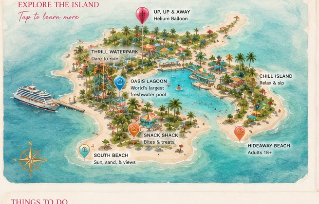

Average Temp
82°F / 28°C • Warm & sunny
Relax, explore, or chase a little adventure—today is yours.
82°F / 28°C • Warm & sunny
78°F / 26°C • Perfect for swimming
7:00 AM–5:00 PM

Thrill Waterpark, Up Up & Away, Chill Island, South Beach, Hideaway Beach.
Snack Shack mozzarella sticks, Oasis Lagoon, a strawberry daiquiri, and meeting at South Beach.
Snack Shack, Skipper’s Grill, Chill Grill, and Captain Jack’s.